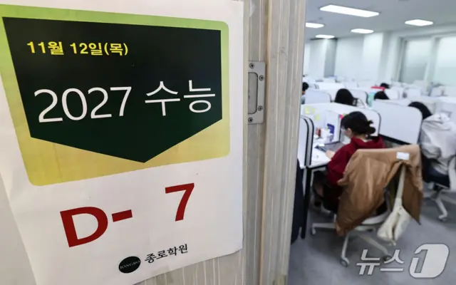
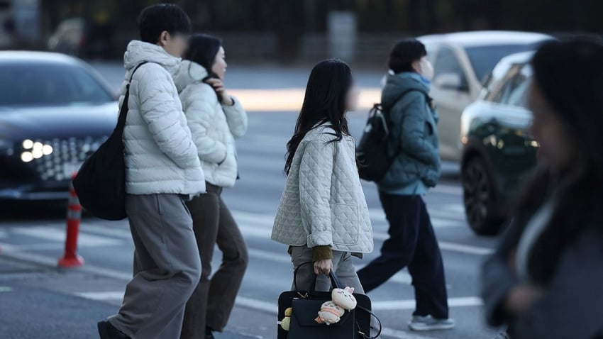
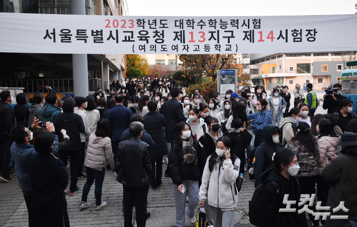
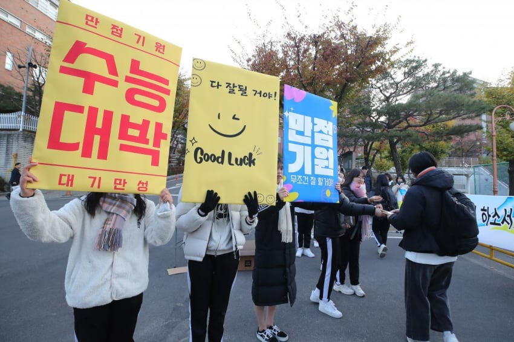
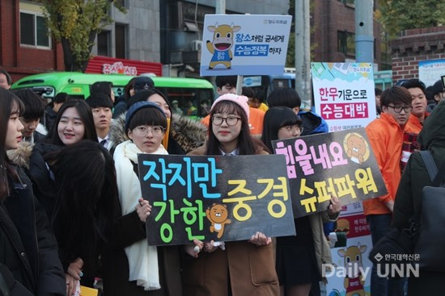
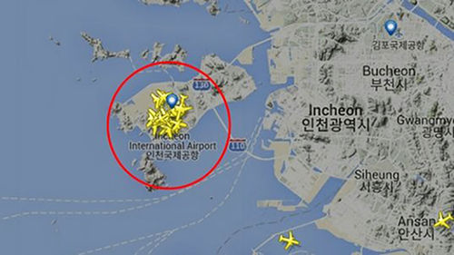

생각해보면 싱붕이 어릴때부터도 수능은 절대영역이었고 공정성을 위해 모든 어른들이 나서서 보호해주는 그런 시험이었음
오죽하면 수능 영어듣기평가때는 비행기도 전부 멈추겠음
근데 수능 << 이새끼가 ai한테 이미 조금씩 뚫린거같은데, 이번에조차 뚫리면, 그땐 진짜 나라가 크게 뒤집어질거란 생각이듦
그만큼 한국사회에선 좋든싫든 수능이란 시험이 차지하는 지위는 절대적인듯
댓글
수집 당시 댓글 537개
1212 · 11.17 15:46:51
ㅇㅇ · 11.17 15:47:56
· ㅇㅇ · 11.17 15:59:40
· ㅇㅇ · 11.17 16:15:18
ㅇㅇ · 11.17 15:50:51
통붕이 · 11.17 15:52:00
ㅇㅇ · 11.17 15:52:06
ㅇㅇ · 11.17 15:53:21
· ㅇㅇ · 11.17 16:02:46
· ㅇㅇ · 11.17 16:15:28
ㅇㅇ · 11.17 15:56:11
· ㅇㅇ · 11.17 16:30:27
· ㅇㅇ · 11.17 18:40:19
ㅇㅇ · 11.17 15:58:25
ㅇㅇ · 11.17 16:04:19
삭제됨 · 11.17 16:08:34
· ㅇㅇ · 11.17 16:16:43
· ㅇㅇ · 11.17 16:30:14
ㅇㅇ · 11.17 16:09:15
· ㅇㅇ · 11.17 18:58:14
· ㅇㅇ · 11.17 20:21:24
· ㅇㅇ · 11.17 20:28:22
삭제됨 · 11.17 16:09:30
· ㅇㅇ · 11.17 16:10:31
ㅇㅇ · 11.17 16:10:18
ㅇㅇ · 11.17 16:11:26
ㅇㅇ · 11.17 16:15:44
ㅇㅇ · 11.17 16:17:15
ㅇㅇ · 11.17 16:18:24
ㅇㅇ · 11.17 16:18:33
ㅇㅇ · 11.17 16:20:30
ㅇㅇ · 11.17 16:20:56
급식충
새끼네
ㅇㅇ · 11.17 16:21:28
· ㅇㅇ · 11.17 16:37:15
· ㅇㅇ · 11.17 17:26:57
· ㅇㅇ · 11.17 17:58:26
· ㅇㅇ · 11.17 18:10:01
ㅇㅇ · 11.17 16:25:26
ㅇㅇ · 11.17 16:25:30
ㅇㅇ · 11.17 16:29:15
ㅇㅇ · 11.17 16:30:17
ㅇㅇ · 11.17 16:32:00
ㅁㅁ · 11.17 16:32:57
Machiavelli · 11.17 16:34:34
ㅇㅇ · 11.17 16:35:22
· ㅇㅇ · 11.17 16:46:45
ㅇㅇ · 11.17 16:42:29
ㅇㅇ · 11.17 16:47:55
ㅇㅇ · 11.17 16:50:46
ㅇㅇ · 11.17 16:58:50
· ㅇㅇ · 11.17 17:02:01
· ㅇㅇ · 11.17 17:19:54
· ㅇㅇ · 11.17 19:03:29
ㅇㅇ · 11.17 17:05:50
ㅇㅇ · 11.17 17:15:49
ㅇㅇ · 11.17 17:23:18
ㅇㅇ · 11.17 17:23:51
ㅇㅇ · 11.17 17:26:20
· 찢 · 11.17 17:27:22
· 찢 · 11.17 17:27:47
· ㅇㅇ · 11.17 18:02:03
ㅇㅇ · 11.17 17:30:16
ㅇㅇ · 11.17 17:36:10
ㅇㅇ · 11.17 17:42:59
ㅇㅇ · 11.17 17:45:18
· ㅇㅇ · 11.17 17:53:46
· ㅇㅇ · 11.17 17:54:57
ㅇㅇ · 11.17 17:54:33
ㅇㅇ · 11.17 17:56:31
ㅇㅇ · 11.17 17:57:24
ㅇㅇ · 11.17 18:09:51
ㅇㅇ · 11.17 18:10:14
· ㅇㅇ · 11.17 20:09:30
· ㅇㅇ · 11.17 20:12:37
ㅇㅇ · 11.17 18:12:26
리자이밍 · 11.17 18:12:53
ㅁㄴㅇ · 11.17 18:21:54
· ㅁㄴㅇ · 11.17 18:25:26
· ㅇㅇ · 11.17 20:08:06
ㅇㅇ · 11.17 18:27:15
pyuru · 11.17 18:32:13
ㅇㅇ · 11.17 18:48:48
ㅇㅇ · 11.17 18:53:28
· fasdsd · 11.17 19:05:12
fasdsd · 11.17 19:05:01
· fasdsdfd · 11.17 19:05:22
· fasdsdfd · 11.17 19:05:26
· fasdsdfd · 11.17 19:05:33
ㅇㅇ · 11.17 19:08:31
ㅇㅇ · 11.17 19:11:08
ㅇㅇ · 11.17 19:13:46
· ㅇㅇ · 11.17 20:10:02
ㅇㅇ · 11.17 19:24:40
ㅇㅇ · 11.17 19:29:27
ㅇㅇ · 11.17 19:32:32
ㅇㅇ · 11.17 20:10:16
ㅇㅇ · 11.17 20:12:41
ㅇㅇ · 11.17 20:22:35
ㅇㅇ · 11.17 20:30:31
dorosi · 11.17 20:30:32
· ㅇㅇ · 11.17 15:08:07
· ㅇㅇ · 11.17 15:08:18
ㅇㅇ · 11.17 15:08:48
· ㅇㅇ · 11.17 15:27:22
ㅇㅇ · 11.17 15:09:00
· ㅇㅇ · 11.17 15:13:34
ㅇㅇ · 11.17 15:09:36
ㅇㅇ · 11.17 15:13:14
Meiker · 11.17 15:13:55
ㅇㅇ · 11.17 15:14:14
· ㅇㅇ · 11.17 15:48:33
ㅇㅇ · 11.17 15:14:30
ㅇㅇ · 11.17 15:15:46
ㅇㅇ · 11.17 15:16:41
ㅇㅇ · 11.17 15:17:58
· ㅇㅇ · 11.17 15:20:10
· ㅇㅇ · 11.17 15:20:48
· $$ · 11.17 16:11:06
ㅇㅇ · 11.17 15:18:39
· ㅇㅇ · 11.17 16:00:49
ㅇㅇ · 11.17 15:20:45
ㅇㅇ · 11.17 15:24:03
ㅇㅇ · 11.17 15:24:55
· ㅇㅇ · 11.17 15:27:55
· ㅇㅇ · 11.17 15:28:31
· ㅇㅇ · 11.17 15:32:10
· ㅇㅇ · 11.17 15:33:11
· ㅇㅇ · 11.17 15:34:43
· ㅇㅇ · 11.17 15:36:30
· ㅇㅇ · 11.17 15:37:48
· ㅇㅇ · 11.17 15:38:12
· ㅇㅇ · 11.17 15:41:09
· ㅇㅇ · 11.17 15:44:34
· ㅇㅇ · 11.17 15:46:16
· ㅇㅇ · 11.17 15:47:30
· ㅇㅇ · 11.17 15:50:03
· ㅇㅇ · 11.17 15:50:50
· ㅇㅇ · 11.17 15:51:32
· ㅇㅇ · 11.17 15:52:23
· ㅇㅇ · 11.17 15:53:17
· ㅇㅇ · 11.17 15:56:24
· ㅇㅇ · 11.17 15:57:54
· ㅇㅇ · 11.17 15:58:42
· ㅇㅇ · 11.17 16:00:33
· ㅇㅇ · 11.17 16:00:49
· ㅇㅇ · 11.17 16:01:49
· ㅇㅇ · 11.17 16:02:35
· ㅇㅇ · 11.17 16:03:06
· ㅇㅇ · 11.17 16:03:32
· ㅇㅇ · 11.17 16:03:45
· ㅇㅇ · 11.17 16:05:14
· ㅇㅇ · 11.17 16:06:30
· ㅇㅇ · 11.17 16:07:24
· ㅇㅇ · 11.17 16:08:44
· ㅇㅇ · 11.17 16:10:31
· ㅇㅇ · 11.17 16:11:31
· ㅇㅇ · 11.17 16:12:34
· ㅇㅇ · 11.17 16:12:49
· ㅇㅇ · 11.17 16:13:30
· ㅇㅇ · 11.17 16:14:38
· ㅇㅇ · 11.17 16:15:44
· ㅇㅇ · 11.17 16:15:51
· ㅇㅇ · 11.17 16:16:46
· ㅇㅇ · 11.17 16:17:02
· ㅇㅇ · 11.17 16:17:25
· ㅇㅇ · 11.17 16:17:53
· ㅇㅇ · 11.17 16:18:32
ㅇㅇ · 11.17 15:25:26
· ㅇㅇ · 11.17 15:28:23
· ㅇㅇ · 11.17 15:28:57
· ㅇㅇ · 11.17 15:29:55
· ㅇㅇ · 11.17 16:40:00
· ㅇㅇ · 11.17 16:43:48
· ㅇㅇ · 11.17 16:46:37
· ㅇㅇ · 11.17 17:56:03
· ㅇㅇ · 11.17 17:59:08
· ㅇㅇ · 11.17 20:05:24
ㅇㅇ · 11.17 15:27:23
ㅇㅇ · 11.17 15:27:45
ㅇㅇ · 11.17 15:29:30
· ㅇㅇ · 11.17 15:29:58
· ㅇㅇ · 11.17 15:32:02
1 · 11.17 15:31:36
· ㅇㅇ · 11.17 15:32:26
· ㅇㅇ · 11.17 15:32:41
· ㅇㅇ · 11.17 15:35:25
· ㅇㅇ · 11.17 15:51:57
ㅇㅇ · 11.17 15:32:05
· ㅇㅇ · 11.17 18:37:52
ㅇㅇ · 11.17 15:35:58
ㅇㅇ · 11.17 15:37:00
· ㅇㅇ · 11.17 15:38:50
ㅇㅇ · 11.17 15:37:00
ㅇㅇ · 11.17 15:38:11
ㅇㅇ · 11.17 15:39:15
ㅇㅇ · 11.17 15:40:40
kawa · 11.17 15:40:46
ㅇㅇ · 11.17 15:41:38
1찍=
짱깨
빨갱이
ㅇㅇ · 11.17 15:42:15
ㅇㅇ · 11.17 15:46:06
· ㅇㅇ · 11.17 14:50:53
ㅇㅇ · 11.17 14:42:47
· ㅇㅇ · 11.17 14:43:09
· ㅇㅇ · 11.17 14:47:16
· ㅇㅇ · 11.17 14:50:27
· ㅇㅇ · 11.17 15:00:52
ㅇㅇ · 11.17 14:43:05
ㅇㅇ · 11.17 14:43:12
· ㅇㅇ · 11.17 14:44:25
ㅇㅇ · 11.17 14:43:21
ㅇㅇ · 11.17 14:43:35
· ㅇㅇ · 11.17 14:45:21
· ㅇㅇ · 11.17 14:46:05
· ㅇㅇ · 11.17 14:46:36
· ㅇㅇ · 11.17 14:47:32
· ㅇㅇ · 11.17 15:09:27
· ㅇㅇ · 11.17 15:11:12
· ㅇㅇ · 11.17 15:12:45
· ㅇㅇ · 11.17 15:15:01
· ㅇㅇ · 11.17 15:16:41
· ㅇㅇ · 11.17 15:18:49
· ㅇㅇ · 11.17 15:23:58
· ㅇㅇ · 11.17 15:26:53
· ㅇㅇ · 11.17 15:28:44
· ㅇㅇ · 11.17 15:29:57
· ㅇㅇ · 11.17 15:31:34
· ㅇㅇ · 11.17 15:32:56
· ㅇㅇ · 11.17 15:37:08
· ㅇㅇ · 11.17 15:42:23
· ㅇㅇ · 11.17 15:44:52
ㅇㅇ · 11.17 14:43:48
ㅇㅇ · 11.17 14:44:35
· ㅇㅇ · 11.17 14:44:52
· ㅇㅇ · 11.17 16:31:03
ㅇㅇ · 11.17 14:44:39
ㅇㅇ · 11.17 14:44:42
ㅇㅇ · 11.17 14:45:44
· ㅇㅇ · 11.17 14:46:27
· ㅇㅇ · 11.17 14:48:25
· ㅇㅇ · 11.17 14:52:13
· ㅇㅇ · 11.17 14:52:53
ㅇㅇ · 11.17 14:45:46
· 사이버아다 · 11.17 15:10:31
· ㅇㅇ · 11.17 15:17:23
ㅇㅇ · 11.17 14:45:48
· ㅇㅇ · 11.17 14:45:53
· ㅇㅇ · 11.17 14:47:50
ㅇㅇ · 11.17 14:46:30
ㅇㅇ · 11.17 14:47:56
· ㅇㅇ · 11.17 15:03:01
· ㅇㅇ · 11.17 15:23:49
· ㅇㅇ · 11.17 15:25:20
· ㅇㅇ · 11.17 15:42:20
ㅇㅇ · 11.17 14:48:18
ㅇㅇ · 11.17 14:48:43
· ㅇㅇ · 11.17 14:49:36
· ㅇㅇ · 11.17 14:49:59
· ㅇㅇ · 11.17 14:50:34
· ㅇㅇ · 11.17 14:51:06
· ㅇㅇ · 11.17 14:51:35
· ㅇㅇ · 11.17 14:52:04
· ㅇㅇ · 11.17 14:52:36
· ㅇㅇ · 11.17 14:52:43
· ㅇㅇ · 11.17 14:53:09
· ㅇㅇ · 11.17 14:53:21
· ㅇㅇ · 11.17 14:53:59
· ㅇㅇ · 11.17 14:54:37
· ㅇㅇ · 11.17 14:54:38
· ㅇㅇ · 11.17 14:55:09
· ㅇㅇ · 11.17 14:55:26
· ㅇㅇ · 11.17 14:56:04
· ㅇㅇ · 11.17 15:02:25
dd · 11.17 14:49:58
· dd · 11.17 14:51:55
· ㅇㅇ · 11.17 14:52:40
· ㅇㅇ · 11.17 14:53:25
· ㅇㅇ · 11.17 15:49:33
· ㅇㅇ · 11.17 16:04:11
위선자 · 11.17 14:50:36
ㅇㅇ · 11.17 14:51:18
ㅇㅇ · 11.17 14:52:38
· ㅇㅇ · 11.17 14:56:18
ㅇㅇ · 11.17 14:52:39
ㅇㅇ · 11.17 14:54:38
· ㅇㅇ · 11.17 14:58:42
ㅇㅇ · 11.17 14:56:41
수능
멸망
ㅇㅇ · 11.17 14:57:12
니애미 · 11.17 14:58:18
ㅇㅇ · 11.17 15:00:35
ㅇㅇ · 11.17 15:04:11
ㅇㅇ · 11.17 15:05:34
· ㅇㅇ · 11.17 15:07:45
· ㅇㅇ · 11.17 15:55:23
ㅇㅇ · 11.17 15:06:03
ㅇㅇ · 11.17 15:06:48
· ㅇㅇ · 11.17 15:08:39
· ㅇㅇ · 11.17 15:08:41
ㅇㅇ · 11.17 15:07:03
· ㅇㅇ · 11.17 15:22:17
ㅇㅇ · 11.17 15:07:54
· ㅇㅇ · 11.17 14:53:52
ㅇㅇ · 11.17 14:25:29
ㅇㅇ · 11.17 14:25:41
· ㅇㅇ · 11.17 14:35:27
· ㅇㅇ · 11.17 14:46:05
· ㅇㅇㄴ · 11.17 14:46:45
· ㅇㅇ · 11.17 14:54:35
ㅇㅇ · 11.17 14:25:48
ㅇㅇ · 11.17 14:26:08
· ㅇㅇ · 11.17 14:26:41
ㅇㅇ · 11.17 14:26:34
ㅇㅇ · 11.17 14:26:38
ㅇㅇ · 11.17 14:27:16
ㅇㅇ · 11.17 14:27:19
실베현자 · 11.17 14:27:46
· 실베현자 · 11.17 14:28:04
ㅇㅇ · 11.17 14:28:51
· ㅇㅇ · 11.17 14:29:22
· ㅇㅇ · 11.17 14:32:25
짱
ㅇㅇ · 11.17 14:29:09
일본덧니충 · 11.17 14:29:11
xopowo · 11.17 14:29:17
ㅇㅇ · 11.17 14:29:20
· ㅇㅇ · 11.17 14:31:01
· ㅇㅇ · 11.17 14:46:36
· ㅇㅇ · 11.17 14:48:41
ㅇㅇ · 11.17 14:29:47
ㅇㅇ · 11.17 14:29:58
ㅇㅇ · 11.17 14:30:03
ㅇㅇ · 11.17 14:30:32
ㅇㅇ · 11.17 14:31:11
· ㅇㅇ · 11.17 14:31:52
· ㅇㅇ · 11.17 14:32:42
ㅇㅇ · 11.17 14:31:49
ㅇㅇ · 11.17 14:31:57
ㅇㅇ · 11.17 14:31:58
· ㅇㅇ · 11.17 14:32:37
· ㅇㅇ · 11.17 14:33:18
· ㅇㅇ · 11.17 14:33:51
· ㅇㅇ · 11.17 14:34:31
· ㅇㅇ · 11.17 14:35:22
· ㅇㅇ · 11.17 14:37:01
· ㅇㅇ · 11.17 14:37:28
· ㅇㅇ · 11.17 14:37:36
· ㅇㅇ · 11.17 14:45:10
· ㅇㅇ · 11.17 14:45:36
· ㅇㅇ · 11.17 14:46:37
ㅇㅇ · 11.17 14:33:06
수시충 저능아들 호들갑 좆되네
ㅇㅇ · 11.17 14:33:10
· ㅇㅇ · 11.17 14:34:25
· ㅇㅇ · 11.17 14:37:39
ㅇㅇ · 11.17 14:33:45
ㅇㅇ · 11.17 14:34:20
ㅇㅇ · 11.17 14:34:31
· ㅇㅇ · 11.17 14:35:04
ㅇㅇ · 11.17 14:34:48
ㅇㅇ · 11.17 14:34:54
· ㅇㅇ · 11.17 14:35:40
· ㅇㅇ · 11.17 14:36:03
· ㅇㅇ · 11.17 14:36:22
ㅇㅇ · 11.17 14:35:09
고작 GPT, 클로드 3만따리
· ㅇㅇ · 11.17 14:35:35
쓰는 좆거지들이 지들 망한 인생
· ㅇㅇ · 11.17 14:35:58
AI에 위탁 좆되네
ㅇㅇ · 11.17 14:35:32
· ㅇㅇ · 11.17 14:37:01
네 다음 범죄자 조국
ㅇㅇ · 11.17 14:35:36
ㅇㅇ · 11.17 14:36:00
ㅇㅇ · 11.17 14:36:21
· ㅇㅇ · 11.17 14:36:57
ㅇㅇ · 11.17 14:36:45
ㅇㅇ · 11.17 14:37:15
· ㅇㅇ · 11.17 14:41:14
· ㅇㅇ · 11.17 16:34:21
ㅇㅇ · 11.17 14:38:53
ㅇㅇ · 11.17 14:39:10
· ㅇㅇ · 11.17 14:39:46
· ㅇㅇ · 11.17 14:40:48
ㅇㅇ · 11.17 14:39:55
ㅇㅇ · 11.17 14:40:09
· ㅇㅇ · 11.17 14:41:07
ㅇㅇ · 11.17 14:40:33
Hololive만본다 · 11.17 14:40:51
· ㅇㅇ · 11.17 15:00:20
ㅇㅇ · 11.17 14:41:38
· ㅇㅇ · 11.17 14:42:08
· ㅇㅇ · 11.17 14:42:58
· ㅇㅇ · 11.17 14:46:10
· ㅇㅇ · 11.17 14:47:09
· ㅇㅇ · 11.17 15:13:44
· ㅇㅇ · 11.17 15:14:22
· eidjebdb · 11.17 15:31:29
ㅇㅇ · 11.17 14:42:06
· ㅇㅇ · 11.17 14:42:37
· ㅇㅇ · 11.17 14:43:09
· ㅇㅇ · 11.17 15:09:16
ㅇㅇ · 11.17 14:42:37
· ㅇㅇ · 11.17 14:43:11
· ㅇㅇ · 11.17 14:43:22
· ㅇㅇ · 11.17 14:45:27
· ㅇㅇ · 11.17 14:49:17
· 블랙글레이즈드 · 11.17 00:32:57
ㅇㅇ · 11.16 21:08:41
맥스웰테슬라 · 11.16 21:09:39
ㅇㅇ · 11.16 21:28:13
ㅇㅇ · 11.16 21:45:58
· ㅇㅇ · 11.17 07:39:55
· ㅇㅇ · 11.17 14:23:27
ㅇㅇ · 11.17 00:20:34
ㅇㅇ · 11.17 07:40:28
· ㅇㅇ · 11.17 14:18:25
· ㅇㅇ · 11.17 14:25:34
· ㅇㅇ · 11.17 14:25:50
· ㅇㅇ · 11.17 14:25:54
· ㅇㅇ · 11.17 14:27:23
· ㅇㅇ · 11.17 14:31:28
· ㅇㅇ · 11.17 14:32:19
· ㅇㅇ · 11.17 15:52:39
ㅇㅇ · 11.17 14:16:34
ㅇㅇ · 11.17 14:16:49
ㅇㅇ · 11.17 14:16:54
ㅇㅇ · 11.17 14:17:16
좆능
망하든말든
알빠노
ㅇㅇ · 11.17 14:17:25
ㅇㅇ · 11.17 14:17:35
· ㅇㅇ · 11.17 14:18:06
· ㅇㅇ · 11.17 14:34:45
ㅇㅇ · 11.17 14:17:55
ㅇㅇ · 11.17 14:18:22
· ㅇㅇ · 11.17 14:19:54
겐쉰프 · 11.17 14:18:23
ㅇㅇ · 11.17 14:18:23
· ㅇㅇ · 11.17 14:18:27
· ㅇㅇ · 11.17 14:18:32
ㅇㅇ · 11.17 14:18:28
· ㅇㅇ · 11.17 14:21:00
· ㅇㅇ · 11.17 14:25:41
ㅇㅇ · 11.17 14:18:59
· ㅇㅇ · 11.17 14:20:49
ㅇㅇ · 11.17 14:19:00
선관위부터무너졌는데?
ㅂㄹㅌ · 11.17 14:19:08
겐쉰프 · 11.17 14:19:10
ㅇㅇ · 11.17 14:19:14
ㅇㅇ · 11.17 14:19:18
ㅇㅇ · 11.17 14:19:19
ㅇㅇ · 11.17 14:19:28
ㅇㅇ · 11.17 14:19:38
ㅇㅇ · 11.17 14:20:04
· 아르웬의구리유두 · 11.17 14:21:23
ㅇㅇ · 11.17 14:20:46
ㅇㅇ · 11.17 14:20:59
· ㅇㅇ · 11.17 14:21:40
ㅇㅇ · 11.17 14:20:59
· ㅇㅇ · 11.17 14:25:52
ㅇㅇ · 11.17 14:21:06
겐쉰프 · 11.17 14:21:09
ㅇㅇ · 11.17 14:21:27
· ㅇㅇ · 11.17 14:24:27
· ㅇㅇ · 11.17 14:26:49
· ㅇㅇ · 11.17 14:39:34
ㅇㅇ · 11.17 14:21:29
ㅇㅇ · 11.17 14:21:29
· ㅇㅇ · 11.17 14:22:15
· ㅇㅇ · 11.17 14:39:32
· ㅇㅇ · 11.17 14:40:17
ㅇㅇ · 11.17 14:21:56
ㅇㅇ · 11.17 14:22:06
ㅇㅇ · 11.17 14:22:08
· ㅇㅇ · 11.17 14:22:21
· ㅇㅇ · 11.17 14:22:54
· ㅇㅇ · 11.17 14:41:33
ㅇㅇ · 11.17 14:22:25
ㅇㅇ · 11.17 14:22:49
ㅇㅇ · 11.17 14:23:18
처녀따개 · 11.17 14:23:19
순수비난 · 11.17 14:23:19
· 순수비난 · 11.17 14:24:04
· ㅇㅇ · 11.17 17:42:15
· 순수비난 · 11.17 17:43:21
ㅇㅇ · 11.17 14:23:31
ㅇㅇ · 11.17 14:23:33
ㅇㅇ · 11.17 14:24:14
ㅇㅇ · 11.17 14:24:15
ㅇㅇ · 11.17 14:24:21
· ㅇㅇ · 11.17 14:25:49
· ㅇㅇ · 11.17 14:38:44
ㅇㅇ · 11.17 14:24:27
ㅇㅇ · 11.17 14:24:35
· ㅇㅇ · 11.17 14:26:57
· ㅇㅇ · 11.17 14:40:40
ㅇㅇ · 11.17 14:24:47
DC전사쿠루미쨩 · 11.17 14:24:53
ㅇㅇ · 11.17 14:24:58
ㅇㅇ · 11.17 14:25:02
· ㅇㅇ · 11.17 14:26:23
ㅇㅇ · 11.17 14:25:04
ㅇㅇ · 11.17 14:25:25
ㅇㅇ · 11.17 14:25:29
· ㅇㅇ · 11.17 14:26:11
· ㅇㅇ · 11.17 14:27:44
· ㅇㅇ · 11.17 14:36:08
· ㅇㅇ · 11.17 14:52:49
ㅇㅇ · 11.16 20:02:23
· ㅇㅇ · 11.17 14:18:10
ㅇㅇ · 11.16 20:02:30
씨발놈의새 · 11.16 20:02:31
ㅇㅇ · 11.16 20:03:00
· ㅇㅇ · 11.16 20:26:16
· 안될거뭐있노. · 11.17 14:21:02
ㅇㅇ · 11.16 20:05:21
둥실라이드 · 11.16 20:05:45
ㅇㅇ · 11.16 20:06:30
ㅇㅇ · 11.16 20:08:09
개댇지 · 11.16 20:10:32
ㅇㅇ · 11.16 20:12:07
· ㅇㅇ · 11.16 20:32:13
· ㅇㅇ · 11.16 20:35:23
· ㅇㅇ · 11.16 20:43:56
· ㅇㅇ · 11.16 21:03:50
· ㅇㅇ · 11.17 00:31:57
· 안될거뭐있노. · 11.17 14:21:36
ㅇㅇ · 11.16 20:34:14
· ㅇㅇ · 11.16 20:39:04
· ㅇㅇ · 11.16 20:53:17
· ㅇㅇ · 11.17 14:20:00
· ㅇㅇ · 11.17 14:39:57
ㅇㅇ · 11.16 20:35:48
피리약 · 11.16 20:38:32
ㅇㅇ · 11.16 20:40:30
ㅇㅇ · 11.16 20:45:29
· 페이탈베룬 · 11.16 20:58:18
· ㅇㅇ · 11.16 21:41:49
· ㅇㅇ · 11.17 14:23:12
ㅇㅇ · 11.16 20:53:49
ㅇㅇ · 11.16 20:55:16
· ㅇㅇ · 11.17 14:28:31
· ㅇㅇ · 11.17 15:45:41
ㅇㅇ · 11.16 21:00:47
· 맥스웰테슬라 · 11.16 21:09:08